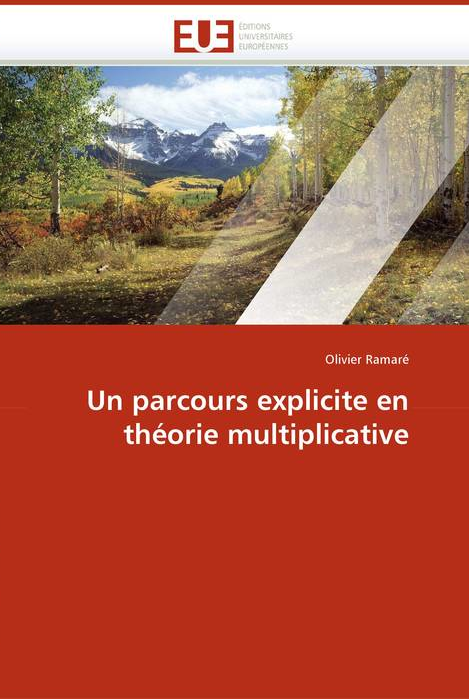
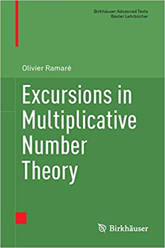

- Navigation
- Retour au début
- Articles de recherche +
- Livres / Books
- Textes grand public / Large audience
- Textes d'exposition / Expository papers
- Cours, notes et bibliothèque
| Là-bas se trouvent quelques productions de | la descendance ! |
-
Articles de recherche
-
Sieve
-
We prove that every even integer is a sum of at most six primes.
-
We examine additive properties of denses subsets of sifted sequences, and in particular prove under very general assumptions that such a sequence is an additive asymptotic basis whose order is very well controled.
-
We provide some evidence that the eigenvalues of the hermitian form $\sum_{a/q}|\sum_{n\le N}\varphi_ne(na/q)|^2$ tend to have a limit distribution when $N$ and $Q$ go simultaneously to infinity in such a way that $N/Q^2$ tends to a constant.
-
We prove that the number of primes in an interval of length $N$ is at most $2N/(\log N+3.53)$ when $N$ is large enough. This is obtained through a sieving process which can be seen as a hybrid between the large sieve and the Selberg sieve, and draws on what we call "local models".
-
We explore numerically the eigenvalues of the hermitian form \begin{equation*} \sum_{q\le Q}\sum_{a\mod^* q}\Bigl|\sum_{n\le N}\varphi_n e(na/q)\Bigr|^2 \end{equation*} when $N=\sum_{q\le Q}\phi(q)$. We improve on the existing upper bound, and produce a (conjectural) plot of the asymptotic distribution of its eigenvalues by exploiting fairly extensive computations. The main outcome is that this asymptotic density most probably exists but is not continuous with respect to the Lebesgue measure.
-
We prove that there are infinitely many integers $n$ such that the total number of prime factors of $(n+h_1)\cdots(n+h_\kappa)$ is exactly $(1+o(1))\kappa\log\kappa$. Our result even ensures us that these prime factors are fairly evenly distributed among every factors $n+h_i$.
-
This paper is the sequel of the previous one. I did not publish it at the time, as someone had claimed better results. This claim turned out to be false, but in between J. Maynard got better results via a different method. The one developped here, as well as the questions it raises, are hopefully still of interest!
-
When $K\ge1$ is an integer and $S$ is a set of prime numbers in the interval $(N/2,N]$ with $|S|\ge \pi^*(N)/K$, where $\pi^*(N)$ is the number of primes in this interval, we obtain an upper bound for the additive energy of $S$, which is the number of quadruples $(x_1,x_2,x_3,x_4)$ in $S^4$ satisfying $x_1+x_2=x_3+x_4$. We obtain this bound by a variant of a method of Ramaré and I. Ruzsa. Taken together with an argument due to N. Hegyvári and F. Hennecart this bound implies that when the sequence of prime numbers is coloured with $K$ colours, every sufficiently large integer can be written as a sum of no more than $CK \log \log 4K$ prime numbers, all of the same colour, where $C$ is an absolute constant. This assertion is optimal upto the value of $C$ and answers a question of A. Sárközy.
-
In this paper we show that if $A$ is a subset of the primes with positive lower relative density $\delta$ then $A+A$ must have positive lower density at least $C_1\delta/\log\log(1/\delta)$ in the natural numbers. Our argument uses the techniques developed by the author and I.Ruzsa in their work on additive properties of dense subsequences of sufficiently sifted sequences. The result is optimal and improves on recent work of K.Chipeniuk & M.Hamel. We continue by proving several similar results, by successively replacing the sequence of primes by the sequence of sums of two squares, by the sequence of those integers $n$ that are such that $n$ and $n + 1$ are both a sum of two squares and finally by the sequence of primes $p$ that are such that $p+ 1$ is a sum of two squares. The second part of this paper contains a heuristical argument that leads to several conjectures concerning the existence of $k$-term arithmetic progressions within these sequences. We conclude with some conjectures belonging to the Ramsey part of additive number theory.
-
 For any integer $K\ge1$ let $s(K)$ be the smallest integer
such that in any colouring of the set of squares of the
integers in $K$ colours every large enough integer can be
written as a sum of no more than $s(K)$ squares, all of the same
colour. A problem proposed by Sárközy asks for optimal bounds
for $s(K)$ in terms of $K$. It is known by a result of Hegyvéri
and Hennecart that $s(K)\ge K\exp((\log2+o(1))\log K\log\log K)$. In this
article we show that $s(K)\le K\exp((3\log 2+o(1))\log K\log\log K)$. This
improves on the bound $s(K)\ll_\epsilon K^{2+\epsilon}$, which is the best available
upper bound for $s(K)$.
For any integer $K\ge1$ let $s(K)$ be the smallest integer
such that in any colouring of the set of squares of the
integers in $K$ colours every large enough integer can be
written as a sum of no more than $s(K)$ squares, all of the same
colour. A problem proposed by Sárközy asks for optimal bounds
for $s(K)$ in terms of $K$. It is known by a result of Hegyvéri
and Hennecart that $s(K)\ge K\exp((\log2+o(1))\log K\log\log K)$. In this
article we show that $s(K)\le K\exp((3\log 2+o(1))\log K\log\log K)$. This
improves on the bound $s(K)\ll_\epsilon K^{2+\epsilon}$, which is the best available
upper bound for $s(K)$.
-
-
We study the mean $\sum_{x\in\mathcal{X}} \bigl|\sum_{p\le N}{}u_p e(xp)\bigr|^{\ell}$ when $\ell$ covers the full range $[2,\infty)$ and $\mathcal{X}\subset\mathbb{R}/\mathbb{Z}$ is a well-spaced set, providing a smooth transition from the case $\ell=2$ to the case $\ell>2$ and improving on the results of J.~Bourgain and of B.~Green and T.~Tao. A uniform Hardy-Littlewood property for the set of primes is established as well as a sharp upper bound for $\sum_{x\in\mathcal{X}} \bigl|\sum_{p\le N}{}u_p e(xp)\bigr|^{\ell}$ when $\mathcal{X}$ is small. These results are extended to primes in any interval in a last section, provided the primes are numerous enough therein.
-
-
Explicit estimates on primes or on the Moebius function
-
Strengthening work of Rosser, Schoenfeld, and McCurley, we establish explicit Chebyshev-type estimates in the prime number theorem for arithmetic progressions, for all moduli $k \le 72$ and other small moduli.
-
For many years, Paul Erdös has asked intriguing questions concerning the prime divisors of binomial coefficients, and the powers to which they appear. It is evident that, if $k$ is not too small, then ${n\choose k}$ must be highly composite in that it contains many prime factors and often to high powers. It is therefore of interest to enquire as to how infrequently ${n\choose k}$ is squarefree. One well-known conjecture, due to Erdös, is that ${2n\choose n}$ is not squarefree once $n \ge 5$. Sarközy proved this for sufficiently large $n$ but here we return to and solve the original question.
-
We investigate and improve on a proof of Mertens concerning the distribution of primes in arithmetic progressions. As a by-product, we establish fairly efficient numerical bounds for related quantities.
-
We prove that every interval $]x(1-\Delta^{-1}),x]$ contains a prime number with $\Delta=28\ 314\ 000$ and provided $x\ge 10\ 726\ 905\ 041$. The proof combines analytical, sieve and algorithmical methods.
-
We prove that the error term $\sum_{\substack{n\le x}}\Lambda(n)/n-\log x+\gamma$ differs from $(\psi(x)-x)/x$ by a well controlled function. We deduce very precise numerical results from this formula. Corrigendum here.
-
-
We prove that the sum $\sum_{\left\{\substack{d\le x,\\ (d,r)=1}\right.}\mu(d)/d^{1+\varepsilon}$ is bounded by $1+\varepsilon$, uniformly in $x\ge1$, $r$ and $\varepsilon>0$. We prove a similar estimate for the quantity $\sum_{\left\{\substack{d\le x,\\ (d,r)=1}\right.}\mu(d)\log(x/d)/d^{1+\varepsilon}$. When $\varepsilon=0$, $r$ varies between 1 and a hundred, and $x$ is below a million, this sum is non-negative and this raises the question as to whether it is non-negative for every~$x$.
-
We prove two explicit estimates respectively slightly stronger than $|\sum_{d\le D}\mu(d)|/D\le 0.013/\log D$ for every $D\ge1\,100\,000$ and than $|\sum_{d\le D}\mu(d)/d|\le 0.026/\log D$ for every $D\ge61\,000$.
-
We prove that $|\sum_{\left\{\substack{d\le x,\\(d,q)=1}\right.}\mu(d)/d|\le 2.4\,(q/\varphi(q))/\log (x/q)$ for every $x>q\ge1$ and similar estimates for the Liouville functions. We give also better constants when $x/q$ is larger.
-
We prove that $|\sum_{d\le x}\mu(d)/d|\log x\le 1/69$ when $x\ge 96\,955$ and deduce from that: $|\sum_{\left\{\substack{d\le x,\\(d,q)=1}\right.}\mu(d)/d|\log(x/q)\le \tfrac45 q/\varphi(q)$ for every $x>q\ge1$. We give also better constants when $x/q$ is larger. Furthermore we prove that $|1-\sum_{d\le x}\mu(d)\log (x/d)/d|\le \tfrac3{14}/\log x$ and several similar bounds, from which we also prove corresponding bounds when summing the same quantity, but with the additional condition $(d,q)=1$. We prove similar results for $\sum_{d\le x}\mu(d)\log^2(x/d)/d$, among which we mention the bound $|\sum_{d\le x}\mu(d)\log^2(x/d)/d-2\log x+2\gamma_0|\le \tfrac{5}{24}/\log x$, where $\gamma_0$ is the Euler constant. We complete this collection by bounds like $|\sum_{\left\{\substack{d\le x,\\(d,q)=1}\right.}\mu(d)|/x\le \tfrac{q}{\varphi(q)}/\log(x/q)$. We also provide all these bounds with variations where $1/\log x$ is replaced by $1/(1+\log x)$.
The GP scripts used are to be found on the AMS web site (reference version) and here. -
The initial paper had a sign mistake (in the definition of $h'$ in Lemma~3.2) that has some consequences. We present the required modifications. The final results are all improved.
-
In 2014, Harald Helfgott published a preprint containing a proof that every odd integer strictly larger than $5$ is a sum of three primes. The proof is still to be verified, but it is likely to be correct. The fact that this proof has now some slack goes in this direction. The aim of this appendix is to sketch it and to try to underline the major argument.
-
We denote by $\tilde\psi(x;q,a)$ the sum of $\Lambda(n)/n$ for all $n\le x$ and congruent to $a\mod q$ and similary by $\psi(x;q,a)$ the sum of $\Lambda(n)$ over the same set. We show that the error term in $\tilde\psi(x;q,a)-(\log x)/\varphi(q)-C(q,a)$, for a suitable constant $C(q,a)$ can be controlled by that of $\psi(y;q,a)-y/\varphi(q)$ for $y$ of size~$x$, up to a small error term. As a consequence, if a partial Generalized Riemann Hypothesis has been verified for the $L$-functions attached to characters modulo~$q$ up to height~$H$, this error term is bounded by $O(e^{-H/8})$ when $x\ge H$. Previous methods had at best $O(1/H)$ instead. We further compute asymptotics for the L${}^2$-average of a quantity closely related to~$C(q,a)$.
-
We prove that, if $x$ and $q\leqslant x^{1/16}$ are two parameters, then for any invertible residue class $a$ modulo $q$ there exists a product of exactly three primes, each one below $x^{1/3}$, that is congruent to $a$ modulo $q$.
-
 We prove that, for any
$y>1$ and $q \leq y^{1/3}/900$, for any invertible residue class
$a$
modulo~$q$, there exist primes $p_1$,
$p_2$, $p_3$, all below $y$, such that $p_1 p_2 p_3 \equiv a
[q]$. The appendix provide a fast proof of the case of
Kneser's Theorem we use.
We prove that, for any
$y>1$ and $q \leq y^{1/3}/900$, for any invertible residue class
$a$
modulo~$q$, there exist primes $p_1$,
$p_2$, $p_3$, all below $y$, such that $p_1 p_2 p_3 \equiv a
[q]$. The appendix provide a fast proof of the case of
Kneser's Theorem we use.
-
This aim of this short note is to try to clarify the links between different versions of the ``Chowla conjecture''.
-
This paper is the detailled written account of a talk with the same title given during the conference. Its guiding line is the elementarily proven bound $|\sum_{n\le x}\mu(n)/n|\le 1$. The trivial bound for the implied summation is $\log x+O(1)$, while the Prime Number Theorem tells us that it is $o(1)$. Our starting estimate thus lies in-between, a fact that we explore under different lights.
-
Completing previous enquiries of the same nature, it is shown that, for every non-negative integer $h$, there exists a positive constant $c$ such that, for $x\ge10$, the inequality $|\sum_{n\le x}\mu(n)(\log n)^h/n|\ll \max_{y\sim x}|\sum_{n\le y}\mu(n)|(\log y)^h/y+x^{-c/\log\log x}$ holds. The main theorem applies to general problems of this kind.
-
We mix some of the novelties that have occured recently in the field of explicit multiplicative number theory, together with some questions that have not been answered yet and with several new results.
-
-
Bilinear sums on prime numbers
-
For many years, Paul Erdös has asked intriguing questions concerning the prime divisors of binomial coefficients, and the powers to which they appear. It is evident that, if $k$ is not too small, then ${n\choose k}$ must be highly composite in that it contains many prime factors and often to high powers. It is therefore of interest to enquire as to how infrequently ${n\choose k}$ is squarefree. One well-known conjecture, due to Erdös, is that ${2n\choose n}$ is not squarefree once $n \ge 5$. Sarközy proved this for sufficiently large $n$ but here we return to and solve the original question.
-
We improve the error term in the Bombieri asympotic sieve when the summation is restricted to integers having at most two prime factors. This results in a refined bilinear decomposition for the characteristic function of the primes that enables us to get a best possible estimate for the trigonometric polynomial over primes.
-
Russian version. Our initial problem is to represent classes $m$ modulo $q$ by a sum of three summands, two being taken from rather small sets $\mathcal{A}$ and $\mathcal{B}$ and the third one having an odd number of prime factors (the so-called irregular numbers by S. Ramanujan) and lying in a $[q^{20r}, q^{20r}+q^{16r}]$ for some given $r\ge1$. We show that it is always possible to do so provided that $|\mathcal{A}||\mathcal{B}|\ge q(\log q)^2$. This proof leads us to study the trigonometric polynomial over irregular numbers in a short interval and to seek very sharp bound for them. We prove in particular that $\sum_{q^{20r}\le s \le q^{20r}+q^{16r}}e(sa/q)\ll q^{16r}(\log q)/\sqrt{\varphi(q)}$ uniformly in $r$, where $s$ ranges through the irregular numbers.
We develop a technique initiated by Selberg and Motohashi to do so. In short, we express the characteristic function of the irregular numbers via a family of bilinear decomposition akin to Iwaniec amplification process and that uses pseudo-characetrs or local models. The technique applies to the Liouville function, to the Moebius function and also to the van Mangold function in which case it is slightly more difficult. It is however is simple enough to warrant explicit estimates and we prove for instance that $| \sum_{X < \ell\le 2X}\Lambda(\ell)\, e(\ell a/q) |\le 1300 \sqrt{q}\,X/\varphi(q)$ for $250\le q\le X^{1/24}$. Several other results are also proved. -
We consider exponential sums of the form $ \sum_{X < p \leq 2X}f(p)(\log p) e(p\alpha)\; , $ where the sum runs over the prime numbers $p\in (X, 2X]$ and $f$ is a multiplicative function satisfying certain growth conditions. As a consequence of our result, we consider the normalized Fourier coefficients $(a_g(n))$ of any eulerian $GL(n)$-cuspform $g$ that satisfies the Ramanujan conjecture as well as an estimate of the form $\max_{\alpha\in\mathbb{R}}|\sum_{\substack{n\leq X}} a_g(n) e(n\alpha)|\le X^\eta$ for some $\eta < 1$. For such a form, we get that $ \sum_{X < p\leq 2X} a_g(p)(\log p) e(p\alpha)\ll \frac{\sqrt{q}}{\varphi(q)}X\; , $ where $\alpha$ is a real number such that $\left|\alpha-\frac{a}{q}\right|\ll X^{-1+\frac{1-\eta}{120}}$ for some $q\le X^{(1-\eta)/15}$. Under stronger restrictions and the same conditions on $\alpha$ and $a/q$, we also prove that $ \sum_{X < \ell\leq 2X} a_g(\ell)\mu(\ell) e(p\alpha)\ll X/\sqrt{q}\;. $
-
-
$L$-functions / primes in arithmetic progressions
-
Strengthening work of Rosser, Schoenfeld, and McCurley, we establish explicit Chebyshev-type estimates in the prime number theorem for arithmetic progressions, for all moduli $k \le 72$ and other small moduli.
-
We establish approximate formulae for $L(1,\chi)$ that enable us to sharpen the constant in the upper bound $|L(1,\chi)|\le\tfrac12\log q\,+C$. Computations relative to the best possible constant are exposed and the case of even conductor is also considered.
-
We establish approximate formulae for $L(1,\chi)$ that yield sharp explicit upper bounds for $\left|\prod_{p|h}(1-\chi(p)/p)L(1,\chi)\right|$, bounds of the shape $\tfrac{\phi(hk)}{2hk}(\log q +\kappa(\chi))$, where $k$ is a small divisor of $q$.
-
We give a simple proof of $L(1,\chi)\sqrt{q}\gg 2^{\omega(q)}$ when $\chi$ is an odd primitive quadratic Dirichlet character of conductor $q$. In particular we do not use the Dirichlet class-number formula.
-
We show that any $L$-function attached to a non-exceptionnal Hecke Grossencharakter~$\Xi$ may be approximated by a truncated Euler product when $s$ lies near the line $\Re s=1$. This leads to some refined bounds on $L(s,\Xi)$.
-
We prove that, for $T\ge2\,000$, $T\ge Q\ge10$, and $\sigma\ge0.52$, we have \begin{equation*} \sum_{q\le Q}\mkern-2mu \frac{q}{\varphi(q)}\mkern-6mu \sum_{\chi\mod^* q}\mkern-12mu N(\sigma,T,\chi) \le 20\bigl(56\,Q^{5}T^3\bigr)^{1-\sigma}\log^{5-2\sigma}(Q^2T) +32\,Q^2\log^2(Q^2T) \end{equation*} where $\chi\mod^* q$ denotes a sum over all primitive Dirichlet character $\chi$ to the modulus $q$. Furthermore, we have \begin{equation*} N(\sigma,T,1)\le 2T\log T\, \log\biggl(1+\frac{6.87}{2T}(3T)^{8(1-\sigma)/{3}}\log^{4-2\sigma}(T)\biggr) +103(\log T)^2. \end{equation*}
-
For every modulus $q\ge3$, we define a family of subsets $\mathcal{A}$ of the multiplicative group $(\mathbb{Z}/{q}\mathbb{Z})^\times$ for which the Euler product $\prod_{p\text{mod}q\in\mathcal{A}}(1-p^{-s})$ can be computed in double exponential time, where $s>1$ is some given real number. We provide a Sage script to do so, and extend our result to compute Euler products $\prod_{p\in\mathcal{A}}F(1/p)/G(1/p)$ where $F$ and $G$ are polynomials with real coefficients, when this product converges absolutely. This enables us to give precise values of several Euler products intervening in Number Theory.
Here is an additional file containing some Euler products computed with this method: Some Euler Products.
Here is the Sage script produced and used with this method: LatticeInvariantEulerProducts-06.sage. -
This is the software that emerges from the paper 'Fast multi-precision computation of some Euler products'.
-
This file is an addendum to the paper 'Fast multi-precision computation of some Euler products' and contains the approximation to 100 decimal digits of some Euler products.
-
This note provides accurate truncated formulae with explicit error terms to compute Euler products over primes in arithmetic progressions of rational fractions. It further provides such a formula for the product of terms of the shape $F(1/p, 1/p^s)$ when $F$ is a two-variable polynomial with coefficients in $\mathbb{C}$ and satisfying some restrictive conditions.
-
-
Arithmetic of integer matrices
-
-
We prove a general Turán-Kubilius inequality and use it to derive that the number $\tau(S)$ of divisors of an integer $r\times r$ integer matrix $S$ satisfies $\tau(S)=(Log |S|)^{\log 2+o(1)}$ for all but $o(X)$ matrices of determinant $\le X$. This is in sharp contrast with the average order which is $\asymp |S|^{\beta_r-1}(\log|S|)^{\gamma_r}$ for $\beta_r$ that are $ > 1$ as soon as $r\ge4$ and some non-negative $\gamma_r$. We further extract a fairly large set of matrices over which the normal order is much closer to the average order.
-
We study the algebra of the arithmetic of integer matrices. A link is established between the divisor classes of matrices and lattices. The algebra of arithmetical functions of integral matrices is then shown to be isomorphic to an extension of the Hecke algebra, also called a Hall algebra in combinatorics. The dictionary helps translate results from one setting to another. One important application is the study of subgroups of a finite abelian group.
-
Given a finite abelian $p$-group $F$, we prove an efficient recursive formula for $\sigma_a(F)=\sum_{\substack{H\leq F}}|H|^a$ where $H$ ranges over the subgroups of $F$. We infer from this formula that the $p$-component of the corresponding zeta-function on groups of $p$-rank bounded by some constant $r$ is rational with a simple denominator. We also provide two explicit examples in rank $r=3$ and $r=4$ as well as a closed formula for $\sigma_a(F)$.
-
-
Polynomial values / Number fieds
-
We show that every integer between 1290741 and $3.375\,10^{12}$ is a sum of 5 non negative cubes from which we deduce that every integer which is a cubic residue modulo 9 and an invertible cubic residue modulo 37 is a sum of 7 non negative cubes.
-
Nous montrons que l'ensemble des racines modulo une puissance d'un nombre premier d'un polynôme à coefficients entiers de degré $d$ est une union d'au plus $d$ progressions arithmétiques de modules assez grands. Nous en déduisons une majoration du nombre de ses racines dans un intervalle réel court.
-
By using a better combinatorial identity than the predecessors, it is proved that every integer $\ge\exp(205\,000)$ is a sum of seven non-negative cubes.
-
By using a sieve argument that enables us to avoid using explciit information of the distribution of primes in (rather large) arithmetic progressions, we prove that every integer $\ge\exp(524)$ is a sum of seven non negative cubes.
-
Let $\mathbb{K}$ be a number field and $\mathfrak{q}$ an integral ideal in $\mathcal{O}_{\mathbb{K}}$. A result of Tatuzawa from 1973 computes the asymptotic (with an error term) for the number of ideals with norm at most $x$ in a class of the narrow ray class group of $\mathbb{K}$ modulo $\mathfrak{q}$. This result bounds the error term with a constant whose dependence on $\mathfrak{q}$ is explicit while dependence on $\mathbb{K}$ is not. The aim of this paper is to prove this asymptotic with a fully explicit bound for the error term.
-
-
Harmonic analysis, discrepancy
-
After having extended the notion of $k$-function due to Kaczorowski to the Selberg class, we develop the theory of the remainder terms in the context of Stepanof/Weyl $L^2$-almost periodical functions. For instance, we consider under the Riemann hypothesis the function $$ f(v)= \begin{cases}e^{-v/2}\left[e^v-\mathop{\sum\limits_{n\le e^v}}\nolimits'\Lambda(n)-\frac12\log(1-e^{-2v})-\log 2\pi\right],&\quad\text{when $v>0$}, \\e^{-v/2}\left[\mathop{\sum\limits_{n\le e^v}}\nolimits'\frac{\Lambda(n)}n+v+\frac12\log(\frac{1-e^{v}}{1+e^v})+\gamma \right],&\quad\text{when $v<0$},\\ \end{cases} $$ and show that, for every real number $y$ outside an at most enumerable set, the characteristic function of the set $\{v/f(v)>y\}$ is a Weyl $L^2$-almost periodical function. As a consequence, the densities $(k+1)(\log N)^{-k-1}\sum_{n\le N, f(\log n)>y}(\log n)^k/n$ exist, for every $k\ge0$. These densities are stronger than the more usual harmonic density. We emit also stronger conjectures.
-
Let $\mathcal A$ be a finite alphabet of positive integers with $|\mathcal A| \geq 2$, and $F(\mathcal A)$, the set of numbers in $[0,1)$ whose partial quotients belong to $\mathcal A$. We construct a Kaufman measure on every such set with Hausdorff dimension $ > 1/2$ and establish, this way, the existence of infinitely many normal numbers in $F(\mathcal A)$. This improves previous results of Kaufman and Baker.
-
Webb & Parberry proved in 1969 a startling trigonometric identity involving Fibonacci numbers. This identity has remained isolated up to now, despite the amount of work on related polynomials. We provide a wide generalization of this identity together with what we believe (and hope!) to be its proper understanding.
-
For any positive integer $r$, denote by $\mathcal{P}_r$ the set of all integers $\gamma\in\mathbb{Z}$ having at most $r$ prime divisors. We show that $C_{\mathcal{P}_r}( \mathbb{T} )$, the space of all continuous functions on the circle $\mathbb{T}$ whose Fourier spectrum lies in $\mathcal{P}_r$, contains a complemented copy of $\ell^1$. In particular, $C_{\mathcal{P}_r}( \mathbb{T} )$ is not isomorphic to $C ( \mathbb{T} )$, nor to the disc algebra $A ( \mathbb{D} )$. A similar result holds in the $L^1$ setting.
-
We prove two general and ready for use formulae relating variations of the summatory function $\sum_{\le x}a_n$ together with $\frac{1}{2i\pi}\int_{\kappa-iT}^{\kappa+iT}F(z)x^zdz/z$, where $F(z)=\sum_{n\ge1}a_n/n^z$ and $\kappa$ is a parameter strictly larger than the abcissa of absolute convergence of~$F$.
-
This file is a corrigendum / addendum to the paper 'Modified Truncated Perron Formulae' and contains a formula with a $\log$-free error term when the coefficients $a_n$ are assumed to be bounded.
-
We show under the Generalised Riemann Hypothesis that for every non-constant integer valued polynomial $f$, for every positive $\delta$, and almost every prime $q$ in $[Q,2Q]$, the number of primes from the interval $[x,x+x^{\frac{1}2+\delta}]$ that are values of $f$ modulo~$q$ is the expected one, provided $Q$ is not more than $x^{\frac{2}{3}-\epsilon}$. We obtain this via a variant of the classical truncated Perron's formula for the partial sums of the coefficients of a Dirichlet series.
-
Let $D(s)=\sum a_nn^{-s}$ be a Dirichlet-series which tends to $\infty$ when approaching some non-real point on the boundary of its domain of convergence from the right. We give a localized oscillation theorem for $\sum_{n\le x}a_n$ and apply this result to $\sum_{n=1+\cdots+n_k}\Lambda(n_1)\cdots\Lambda(n_k)$.
-
We consider sequences modulo one that are generated using a generalized polynomial over the real numbers. Such polynomials may also contain the integer part operation $[\cdot]$ additionally to the addition and the multiplication. A well-studied example is the $(n \alpha)$ sequence defined by the monomial $\alpha x$. Their most basic sister --- $([n \alpha]\beta)_{n\geq 0}$ --- is less investigated. So far only the uniform distribution modulo one of these sequences is resolved. Completely new, however, are the discrepancy results proved in this paper. We show in particular that if the pair of real numbers $(\alpha,\beta)$ is badly approximable, then the discrepancy satisfies a bound of order $O_{\alpha,\beta,\varepsilon}(N^{-1+\varepsilon})$.
-
We obtain an upper bound for the discrepancy of the sequence $([p(n)\alpha]\beta)_{n\geq 0}$ generated by the generalized polynomial $[p(x)\alpha]\beta$, where $p(x)$ is a polynomial with real coefficients, $\alpha$ and $\beta$ are irrational numbers satisfying certain conditions.
-
-
Problems with divisors or arithmetical functions
-
We prove a general Turán-Kubilius inequality and use it to derive that the number $\tau(S)$ of divisors of an integer $r\times r$ integer matrix $S$ satisfies $\tau(S)=(Log |S|)^{\log 2+o(1)}$ for all but $o(X)$ matrices of determinant $\le X$. This is in sharp contrast with the average order which is $\asymp |S|^{\beta_r-1}(\log|S|)^{\gamma_r}$ for $\beta_r$ that are $ > 1$ as soon as $r\ge4$ and some non-negative $\gamma_r$. We further extract a fairly large set of matrices over which the normal order is much closer to the average order.
-
When $A$ and $B$ are subsets of the integers in $[1,X]$ and $[1,Y]$ respectively, with $|A| \geq \alpha X$ and $|B| \geq \beta Y$, we show that the number of rational numbers expressible as $a/b$ with $(a,b)$ in $A \times B$ is $\gg (\alpha \beta)^{1+\epsilon}XY$ for any $\epsilon > 0$, where the implied constant depends on $\epsilon$ alone. We then construct examples that show that this bound cannot in general be improved to $\gg \alpha \beta XY$. We also resolve the natural generalisation of our problem to arbitrary subsets $C$ of the integer points in $[1,X] \times [1,Y]$. Finally, we apply our results to answer a question of Sárkéözy concerning the differences of consecutive terms of the product sequence of a given integer sequence.
-
 We first report on computations made
using the GP/PARI package that show that the error term $\Delta(x)$
in the divisor problem is $=\mathcal{M}(x,4)+ O^*(0.35\, x^{1/4}\log x)$
when $x$ ranges $[1\,081\,080, 10^{10}]$, where $\mathcal{M}(x,4)$ is a
smooth approximation. The remaining part (and in fact most) of the
paper is devoted to showing that $|\Delta(x)|\le 0.397\, x^{1/2}$
when $x\ge 5\,560$ and that $|\Delta(x)|\le 0.764\, x^{1/3}\log x$
when $x\ge 5$. Several other bounds are also proposed. We use this
results to get an improved upper bound for the class number of an
quadractic imaginary field and to get a better remainder term for
averages of multiplicative functions that are close to the divisor
function. We finally formulate a positivity conjecture concerning
$\Delta(x)$.
We first report on computations made
using the GP/PARI package that show that the error term $\Delta(x)$
in the divisor problem is $=\mathcal{M}(x,4)+ O^*(0.35\, x^{1/4}\log x)$
when $x$ ranges $[1\,081\,080, 10^{10}]$, where $\mathcal{M}(x,4)$ is a
smooth approximation. The remaining part (and in fact most) of the
paper is devoted to showing that $|\Delta(x)|\le 0.397\, x^{1/2}$
when $x\ge 5\,560$ and that $|\Delta(x)|\le 0.764\, x^{1/3}\log x$
when $x\ge 5$. Several other bounds are also proposed. We use this
results to get an improved upper bound for the class number of an
quadractic imaginary field and to get a better remainder term for
averages of multiplicative functions that are close to the divisor
function. We finally formulate a positivity conjecture concerning
$\Delta(x)$.
-
We produce an explicit formula to perform the evaluation of averages of type $\sum_{d\le D}(g\star 1)(d)/d$, where $\star$ is the Dirichlet convolution and $g$ a function that vanishes at infinity (more precise conditions are needed, a typical example of an acceptable function is $g(m)=\mu(m)/m$). This formula enables one to exploit the changes of sign of $g(m)$. We then proceed by using this formula on the classical family of sieve-related functions $G_q(D)=\sum_{\substack{d\le D,\\ (d,q)=1}}\frac{\mu^2(d)}{\varphi(d)}$ for a integer parameter $q$, improving noticeably on earlier results. The remainder of the paper deals with the special case $q=1$ to show how to practically exploit the changes of sign of the Moebius function. It is in particular proven that $|G_1(D)-\log D-c_0|\le 4/\sqrt{D}$ and $|G_1(D)-\log D-c_0|\le 21/(\sqrt{D}\log D)$ when $D>1$, for a suitable constant~$c_0$.
-
We study the cardinality of $A/A$ and $AA$ of thin subsets $A$ of the set of the first $n$ positive integers. We analize the typical size of these quantities for random sets $A$ of density zero and compare them with the size of $A/A$ and $AA$ of notable sets as the shift primes or the set of the integers which are sum of two squares.
-
We show that $\sum_{k > K,(k,q)=1}\mu(k)/k^2=o(1/K)$ uniformly in $q$. A more precise bound is given, as well as an extension to similar sums. The precise rate of decay is however, unknown.
-
While remaining in as general a context as Levin and Faĭnleĭb in their 1967-paper, we obtain the asymptotic expression for $\sum_{n\le x}\frac{f(n)}{n}\log^{h+1}n$ with the error term $O((\log 2x)^\kappa\log\log(3x))$ for any non-negative multiplicative function $f$ verifying $\sum_{m\le Q}\Lambda_f(m)/m = \kappa\log Q + \eta_0 + O(1/\log(2Q)^h)$.
-
We prove that the number of fractions $h_1/h_2$ of integers $h_1,h_2$ a subset $\mathcal{A}\subset\mathcal{H}\cap[1,X]$ is at least $\alpha X/(\log X)^{3/2}$ where $\mathcal{H}$ is the set of $p-1$, $p$ being a prime such that $p+1$ is a sum of two coprime squares. So, this number of fractions is $\gg_\varepsilon\alpha^{1+\varepsilon}|\mathcal{A}|^2$, where $\varepsilon$ is any positive real number. We take this opportunity to describe a geometrical view of the sieve and its usage to study integer sequences.
-
Combinatorial problems
-
The main problem addressed here is to decide whether it is or not possible to go from a given position on a peg-solitaire board to another one. No non-trivial sufficient conditions are known, but tests have been devised to show it is not possible. We expose the way these tests work in a unified formalism and provide a new one which is strictly stronger than all previous ones.
-
Starting from a non-oriented graph $G$ and an integer $s$, we define the graph tower $G(s)$. In the linear graph $G=L_r$ case, this results in the classical square on $r\times s$ vertices. The aim of this paper is to describe an effective method to compute this dichromatic polynomial $Z_{G(s)}(q,v)$ and to prove rationality of the series $\Sigma_{G}(q,v)[X]=\sum_{s\ge1}Z_{G(s)}(q,v)X^{s-1}$. The functionals created for this purpose are implemented using MuPAD and may be obtained under GPL licence.
-
-
-
Sieve
- Livres
-
Cent et un ans après Hadamard et De la Vallée Poussin.
Publié par Ellipses, collection Mathémathèmes dans un recueil intitulé "Les nombres -- problèmes anciens et actuels", (2000), pages 91--101. -
Mémoire d'habilitation à diriger des recherches
Les articles publiés présentés dans cette thèse ne ont pas incorporés à ce fichier, (2003), 352 pages. Published papers presented in this thesis have not been incorporated to this file. -
Variations modernes sur la suite des nombres premiers
Où l'on traite de la densité de la suite des sin(p) lorsque p parcourt l'ensemble des nombres premiers.
(2006), 104 pages.S'il est classique que la suite des $(\sin n)$ est dense dans $[-1,1]$ lorsque $n$ parcourt l'ensemble des entiers relatifs, il est moins connu mais tout aussi vrai que la suite des $(\sin p)$ lorsque cette fois $p$ est réduit à parcourir seulement l'ensemble des nombres premiers positifs a cette même propriété. Mais pour le démontrer, le chemin à parcourir est plus difficile. Nous accompagnons ici le lecteur le long de ce parcours qui permettra de comprendre plus avant la structure des nombres premiers. Il contient une preuve complète de la propriété annoncée à partir de connaissances du niveau de la première année d'université. Les diverses techniques auxiliaires sont décrites en détail afin que le lecteur puisse faire sienne cette démonstration et continuer seul l'exploration de ce domaine.
-
Arithmetical Aspects of the Large Sieve Inequality
With the collaboration of D.S. Ramana
Hindustan Book Agency (2009), 210 pages.This book is an elaboration of a series of lectures given at the Harish-Chandra Research Institute. The reader will be taken through a journey on the arithmetical sides of the large sieve inequality which, when applied to the Farey dissection, will reveal connections between this inequality, the Selberg sieve and other less used notions such as pseudo-characters and the $\Lambda_Q$-function, as well as extend these theories.
One of the leading themes of these notes is the notion of so-called local models that throws a unifying light on the subject. As examples and applications, the authors present, among other things, an extension of the Brun-Tichmarsh Theorem, a new proof of Linnik's Theorem on quadratic residues, and an equally novel one of the Vinogradov's Three Primes Theorem; the authors also consider the problem of small prime gaps, of sums of two squarefree numbers and several other ones, some of them new, like a sharp upper bound for the number of twin primes $p$ that are such that $p+1$ is squarefree. In the end the problem of equality in the large sieve inequality is considered, and several results in this area are also proved.
A publication of Hindustan Book Agency; distributed within the Americas by the American Mathematical Society. -
 Un parcours explicite en théorie analytique
Une version éditée de la partie non publiée de mon mémoire d'habilitation à diriger des recherches, collection à laquelle j'ai ajouté un exposé sur les fonctions pseudo-périodiques. Pdf
Éditions universitaires Européennes (2010), 120 pages.Depuis vingt ans, mon travail porte essentiellement sur les nombres premiers, avec un accent mis sur la nature effective des résultats. Ma thèse d'habilitation à diriger des recherches contenait les articles que j'avais publiés à cette époque dans ce domaine, plusieurs articles d'exposition, ainsi que deux articles non publiés. La présente monographie reprend les parties non encore publiées de cette thèse, et qui sont commentées pour tenir compte des avancées intermédiaires. J'y ai aussi ajouté un exposé sur les propriétés de presque périodicité de certains termes d'erreur en théorie multiplicative. Ce livre parle en conséquence de l'approche géométrique du crible de Selberg, de la constante de Snirel'man, d'un crible local, de majorations et de minorations de $L(1,\chi)$, de formes bilinéaires sur les nombres premiers et enfin d'oscillations de certains termes d'erreur.
-
 Excursions in Multiplicative Number Theory
With the collaboration of Pieter Moree and Alisa Sedunova
Birkhäuser Advanced Texts Basler Lehrbücher, 355 pages.This textbook offers a unique exploration of analytic number theory that is focused on explicit and realistic numerical bounds. By giving precise proofs in simplified settings, the author strategically builds practical tools and insights for exploring the behavior of arithmetical functions. An active learning style is encouraged across nearly three hundred exercises, making this an indispensable resource for both students and instructors.
Designed to allow readers several different pathways to progress from basic notions to active areas of research, the book begins with a study of arithmetic functions and notions of arithmetical interest. From here, several guided «walks» invite readers to continue, offering explorations along three broad themes: the convolution method, the Levin-Faĭnleĭb theorem, and the Mellin transform. Having followed any one of the walks, readers will arrive at «higher ground», where they will find opportunities for extensions and applications, such as the Selberg formula, Exponential sums with arithmetical coefficients, and the Large Sieve Inequality. Methodology is emphasized throughout, with frequent opportunities to explore numerically using computer algebra packages Pari/GP and Sage.
Excursions in Multiplicative Number Theory is ideal for graduate students and upper-level undergraduate students who are familiar with the fundamentals of analytic number theory. It will also appeal to researchers in mathematics and engineering interested in experimental techniques in this active area.
A review from MAA.
Typos here.
-
Cent et un ans après Hadamard et De la Vallée Poussin.
- Textes grand public
-
Cent et un ans après Hadamard et De la Vallée Poussin
Publié par Ellipses, collection Mathémathèmes dans un recueil intitulé "Les nombres -- problèmes anciens et actuels", (2000), pages 91--101. -
Estimation de l'ordre moyen d'une fonction arithmétique par la
méthode de convolution
Avec Perrine Berment Paru dans la Revue de Mathématiques Spéciales, vol. 122, no. 1, (2012), 15 pages. Goldbach et les sommes de nombres premiers
La Recherche, juin 2013, no 476, pages 68--71. Comme me l'a fait remarquer un lecteur attentif, Gérard Cougny, la soit-disant représentation de Christian Goldbach qui accompagne cet article est en fait une photo retouchée de ... Hermann Grassmann (1809-1877) ! La représentation ci-contre n'est PAS non plus CORRECTE, puisqu'il s'agit d'une peinture de Leonhard Euler. Les historiens Adolf P. Juškevič et Judith Kh. Kopelevič, dans le tome 8 de Vita Mathematica portant sur Goldbach et datant de 1983, disent page XI : "Ce livre contient un répertoire ainsi que quelques dessins. Malheureusement, parmi ceux-ci ne se trouve aucun portrait de Goldbach, car apparemment il n'en existe pas" [traduction personnelle de la traduction en allemand de l'original russe]. Je remercie Andréa Bréard de cette référence qui fait autorité. J'en profite pour vous signaler la base hongroise de biographies et de visages de mathématiciens célèbres. Pour autant que j'ai vérifié, cette base est correcte -- mais pas pour la représentation de Goldbach ! Pendant que je suis ici, encore, je signale le texte sur la conjecture de Goldbach de Bruno Martin, texte qui contient notamment une référence vers une version manuscrite de la lettre originale de Goldbach à Euler en 1742.-
Prime numbers: Emergence and victories of bilinear
forms decomposition
European Math. Soc. newsletter, décembre 2013, no 90 pages 18--28.
-
Cent et un ans après Hadamard et De la Vallée Poussin
- Textes de survol
et/ou d'enseignement
Il s'agit ici de collecter des textes d'enseignement sur des points précis et si possible demandant peu de prérequis. Qui plus est tous ces textes (oups, sauf deux !) sont en français. Les pages du groupe de travail contiennent aussi d'autres textes, dus à mes corréligionaires (voir aussi ici).
- Crible
- Le théorème de Brun-Tichmarsh par le crible de Selberg. (1998), 5 pages.
- L'inégalité du grand crible par la fonction de Selberg. (1999), 5 pages.
- Le théorème de Brun-Titchmarsh : une approche moderne. (2005), 10 pages.
- Some steps in Sieve theory. (2010), 16 pages.
- Une égalité du grand crible pour les entiers sans facteurs carrés. (2012), 10 pages.
- Modèles locaux et effet de crible. (2014), 9 pages.
- Fonctions $\zeta$ de Riemann et $L$ de Dirichlet
- Caractères de Dirichlet, sommes de Gauss et théorème de Bombieri-Davenport. (1998), 6 pages.
- Une région sans zéros pour zeta. (1999), 4 pages.
- État des lieux. (2002), 19 pages.
- Caractères et conducteurs. (2009), 8 pages.
- La méthode de Balasubramanian pour obtenir une région sans zéros. (2011), 11 pages.
- Méthodes analytiques
- Théorèmes de densité. (2000), 4 pages.
- Équations fonctionelles et formes modulaires : la théorie de Hecke. (2000), 4 pages.
- Théorèmes d'oscillation à la Landau. (2011), 10 pages.
- Grandes valeurs des polynômes de Dirichlet, version 2, (2013), 12 pages.
- La méthode locale de Landau. (2013), 12 pages.
- Formes bilinéaires sur nombres premiers
- Some steps in Sieve theory. (2010), 16 pages.
- Moebius et caractères additifs : un théorème de Davenport. (2013), 11 pages.
- Théorie additive
- Explications à propos du théorème de Plunnecke-Ruzsa. (1997), 5 pages.
- Fonctions multiplicatives
- Moyennes de fonctions multiplicatives positives : la méthode de convolution. (2000), 7 pages.
- Moyennes de fonctions multiplicatives positives. (2000), 4 pages.
- Le théorème de Mertens sur la distribution des nombres premiers en progressions arithmétiques et la non-annulation des fonctions L en 1. (2000), 5 pages.
- Séries de Dirichlet et fonctions multiplicatives. (2009), 11 pages.
- Crible
Cours et notes de cours
- -♫-
Le cours de Allahabad 2005 :
Arithmetical aspects of the large sieve inequality . Ce cours a évolué en un livre. - -‡-
Le cours de Chennai 2010 :
Local models and pseudo-characters: an introduction and an application . . - -☼-
Le cours de Chennai 2011 :
Long chains of integers with few prime factors . Les résultats dans le domaine ont depuis évolué, voir par exemple cela. - -☺-
Le cours de Nouakchott 2012 :
Moyennes de fonctions multiplicatives. Une introduction agrémentée d'exercices . Les moyennes sont obtenues de façon élémentaire via la méthode de convolution. Ce cours est devenu une partie de ce livre. - -♥-
Le cours de Monastir 2013 :
Séries de Dirichlet et transformées de Mellin en théorie analytique des nombres. Une introduction agrémentée d'exercices . Les moyennes sont obtenues de façon analytique via une formule de Perron tronquée. Ce cours est devenu une partie de ce livre. - -⌂-
Le cours de Nouakchott 2013 :
Moyennes de fonctions multiplicatives : l'approche analytique. Une introduction agrémentée d'exercices . Les moyennes sont obtenues de façon analytique via une formule de Perron lisse. Ce cours est devenu une partie de ce livre. - -⟡-
The Lethbridge Lectures, 2014 :
Bilinear decomposition and Gallagher-like Theorem for the Möbius function . Lethbridge University, Canada, February 22nd -- March 6th. - -❖-
The Kolkata Lectures, 2022 :
On the Transference Principle for Primes . Enveloping Sieve, Majorant Property and some Examples .
- -♫-
Le cours de Allahabad 2005 :
Bibliothèque
- -§-
Artic Number Theory School, Turku 2011 (par M. Jutila) :
Analytic Number Theory and Number Theoretic Analysis . Une courte et dense introduction aux formules de Voronoï / Atkinson et les évaluations associées par un maître du domaine. - -§-
Le cours de Bamako 2019 (par E. Royer) :
Un cours «africain» sur les formes modulaires . Déjà très complet mais pas encore terminé !
- -§-
Artic Number Theory School, Turku 2011 (par M. Jutila) :
- Entre notes d'exposé et début d'articles ... Utilisables toutefois mais très incomplets !
")